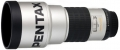

Pentax SMC FA 200mm f2.8 ED-IF，采用9片/8组的镜头结构，12.5°视角。
锐利的成像，优美的焦外，在使用过DA*200/2.8之后，购买了这一只FA*200/2.8
DA*在光学结构上与之没有变化，可以看出Pentax对这只镜头是很满意的，个人感觉FA*比DA*好看一些，“外貌协会”啊，而且FA*更轻:)
好东西总是要特别珍惜，镜身漂亮的白色涂料太容易留下痕迹了，心疼...
不愧为FA*头。
楼下该说都说了。
FA*的通病------涂层不耐磨。 带三脚架座就更好了
成像优异的专业定焦头，加上原配的遮光罩，非常适合亮骚。
大小合适，对焦快速。 光圈收到4后焦外双线性消失。解像力高，色彩还原一流。
新品价格太贵，比N，C两家的贵约50%。而且里面总有一些灰尘（P家镜头的通病？） 表面的白漆容易留下划痕。
好！好！好！*镜素质无可挑剔
重量轻，性价比高，结构设计极其合理，加上MZ3和电池盒后重心恰好在手心处，十分利于端稳
无